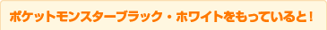
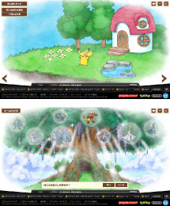
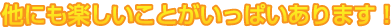
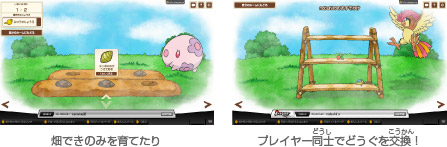
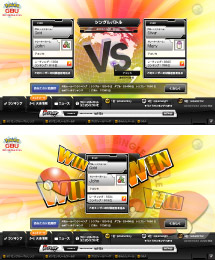
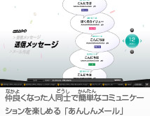
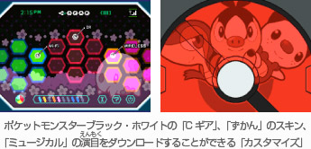
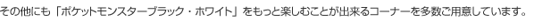

「ポケモングローバルリンク」は、ポケットモンスターブラック・ホワイトと連動（れんどう）したWEBサイトです。
ポケモンドリームワールドは、ポケモングローバルリンクに広がるポケモンの夢（ゆめ）の世界です。イッシュ地方以外（いがい）のポケモンと一緒（いっしょ）にミニゲームを遊ぶことが出来たり、他のプレイヤーとコミュニケーションをしたりすることが出来ます。

さらに、ポケットモンスターブラック・ホワイトを持っているユーザーは、仲良（なかよ）くなったポケモンや、手に入れたどうぐを、「ポケットモンスター ブラック・ホワイト」に登場させることが出来るようになります。



グローバルバトルユニオンでは、全国のトレーナーがWi-Fiで対戦した対戦ランキングや、レーティングを確認（かくにん）することが出来ます。ランキングをみることで、どんなプレイヤーが強いのか、どんな対戦が行われたのかを見ることができます。
Wi-Fiランダムマッチの「レーティングモード」で対戦した、自分の対戦（たいせん）データもランキングの中に登場するため、自分がどれくらい強いのかなどを知ることができます。また、Wi-Fi大会が行われているときは、大会にエントリーも行うことが出来ます。




※ポケモングローバルリンクは、ポケットモンスターブラック・ホワイトをより楽しんでいただくための追加要素（ついかようそ）です。ゲーム本編（ほんぺん）の進行には影響（えいきょう）ありません。